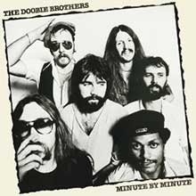

The Quintessential Yacht Rock Works
To understand the true sound of Yacht Rock, here are some of the best albums in this genre:
Christopher Cross by Christopher Cross

It beat out Pink Floyd's The Wall at the Grammy's for Album of the Year, so it must have something good to it. It features many of the typical Yacht Rock session musicians, including The Doobie Brothers' Michael McDonald on backing vocals on some songs. The album itself is consistently smooth and makes most sense for classification in the genre.
Aja by Steely Dan

This album from the jazz rock duo falls heavily under the Yacht Rock genre, and they do it well. Known for its high-quality production and experimental sound with session musicians, Aja became a classic rock staple while also cementing the band's status as a Yacht Rock band (thanks to Michael McDonald's contributions of course).
Toto IV by Toto

Often considered their best album, the band comprised of L.A. session musicians struck big on Toto IV with singles “Rosanna” and “Africa.” This album would win 6 Grammy's, cementing the status of the genre's high production value. Many of the songs have laid back rhythms, made perfect for sailing.
Minute By Minute by The Doobie Brothers

The Doobie Brothers started off as a typical classic rock band, until Michael McDonald joined. After his arrival, he would bring in R&B influence, which would often create a smoother sound for their songs. This would eventually lead to the peak of their careers on this album, bringing them home two Grammy's for “What a Fool Believes.”
Silk Degrees by Boz Scaggs

Similar to other bands of the genre, Boz Scaggs started off as a soft rock act that would eventually morph into a Yacht Rock staple. He co-wrote most of the songs of the album with David Paich, the main songwriter and keyboardist for Toto, so it was bound to have a Yacht Rock sound to it. Many of the members of Toto also appear on the album as session musicians prior to the band's formation.